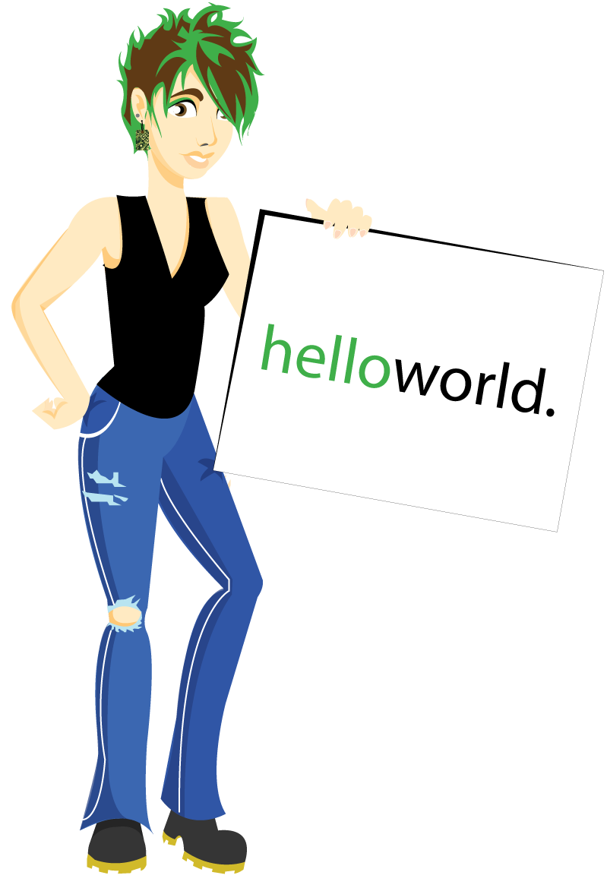
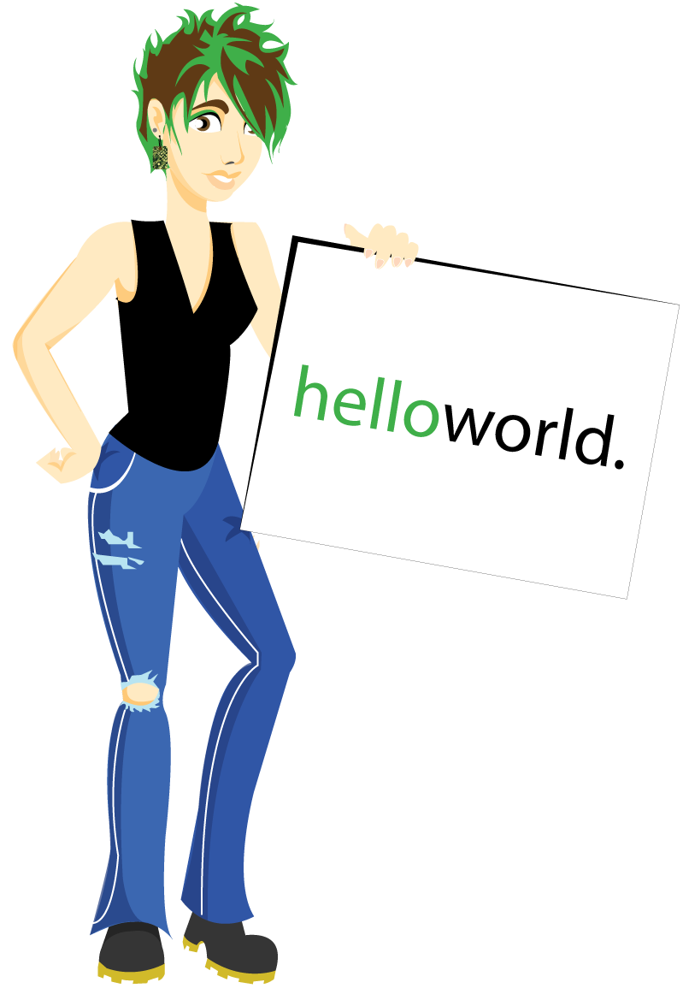

About me
Hello! My name is Karina Chow, and I am a recent graduate of Carnegie Mellon University with a degree in Computer Science and an additional major in Human-Computer Interaction. Starting August 2013, I will work full-time as a Data Engineer at Yammer, Inc in San Francisco, CA.

